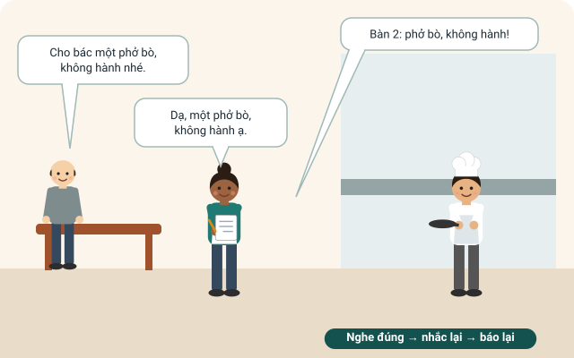
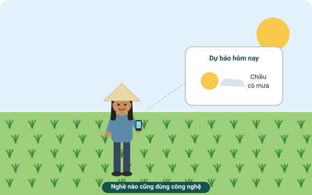
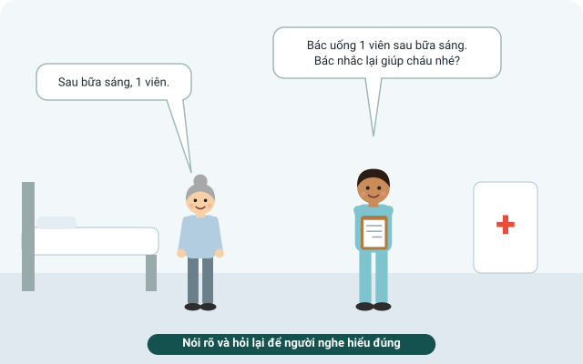

K7 · Tự học và phát triển nghề nghiệp › Bậc 1 Làm quen
Nghề nào cũng cần kỹ năng
Dành cho người lớn. Bài này nối nghề với kỹ năng. Trẻ dùng lại Thẻ nghề từ Bài 1.
- Chuẩn bị: các Thẻ nghề của trẻ, 6 mẩu giấy nhỏ ghi 6 kỹ năng trong Sơ đồ 1 (làm "thẻ kỹ năng").
- Trẻ lớp 1–3: dùng 3 kỹ năng đầu là đủ. Trẻ lớn hơn: dùng cả 6.
- Mỗi kỹ năng có trang riêng trên site, ở mục Kỹ năng. Bạn có thể xem để giải thích thêm.
1. Mục tiêu
- Nói một nghề cần ít nhất 2 kỹ năng làm việc, kèm ví dụ việc dùng kỹ năng đó.
- Kể một công nghệ mà một nghề quen thuộc đang dùng.
2. Khởi động truy xuất
- Thẻ nghề có mấy ô? Em kể tên các ô.
- Đi săn nghề gồm 4 bước nào?
Đáp án
- 5 ô: tên nghề, làm gì, ở đâu, dùng gì, cần kỹ năng gì.
- Nhìn, đoán, hỏi, ghi.
Xem lại: Nghề nghiệp quanh em.
3. Giải thích
Mỗi nghề cần kiến thức riêng. Đầu bếp biết nấu món ăn. Điều dưỡng biết về thuốc. Thợ điện biết về dây điện.
Nhưng có những kỹ năng làm việc mà nghề nào cũng cần. Đó là cách làm việc với người khác và với công việc. Em hãy nhớ 6 kỹ năng dễ thấy sau:
6 kỹ năng nghề nào cũng cần

Nhìn Hình 1. Cô phục vụ dùng ít nhất 3 kỹ năng. Cô lắng nghe khách gọi món. Cô nói rõ khi báo vào bếp. Cô và chú đầu bếp làm cùng nhau để khách có bát phở đúng ý.
Nghề nào cũng dùng công nghệ. Công nghệ là máy móc và phần mềm giúp làm việc tốt hơn. Người nông dân có thể xem dự báo thời tiết trên điện thoại. Người bán hàng dùng máy tính tiền. Công nghệ không chỉ có ở văn phòng.

4. Ví dụ tại nơi làm việc Việt Nam
Tình huống giả định. Bé Minh (lớp 4) đi thăm bà ở bệnh viện. Minh thấy chú điều dưỡng dặn bà uống thuốc.

Về nhà, Minh và mẹ làm "thám tử kỹ năng". Hai mẹ con chọn từng việc nhỏ của chú điều dưỡng:
| Việc nhỏ | Kỹ năng cần |
|---|---|
| Dặn bà uống thuốc, nhờ bà nhắc lại | Nói rõ, lắng nghe |
| Ghi giờ uống thuốc vào sổ hoặc máy tính | Dùng công nghệ, giữ hẹn |
| Báo bác sĩ khi bà thấy mệt | Làm cùng nhau, gỡ khó |
Minh điền ô 5 của thẻ "Điều dưỡng": nói rõ, lắng nghe, làm cùng nhau.
Vì sao cách này tốt: Minh không đoán kỹ năng chung chung. Minh đi từ một việc nhỏ cụ thể đến kỹ năng. Cách này giúp em thấy kỹ năng thật sự được dùng ra sao.
Em có để ý không? Chú điều dưỡng là nam. Bài 3 sẽ nói vì sao điều này hoàn toàn bình thường.
5. Thực hành
Lấy một Thẻ nghề em làm ở Bài 1. Làm thám tử kỹ năng theo sơ đồ dưới đây. Điền ô 5: ít nhất 2 kỹ năng, mỗi kỹ năng kèm một việc nhỏ.
Thám tử kỹ năng 4 bước
- Chọn việc nhỏLấy một việc trong ô "Làm gì?".
- Hỏi"Làm việc này cần biết làm gì?"
- Gọi tênChọn kỹ năng trong 6 thẻ kỹ năng.
- Điền ô 5Ghi kỹ năng kèm việc ví dụ.
Gợi ý 1
Bắt đầu từ ô "Làm gì?". Mỗi việc nhỏ thường cần một, hai kỹ năng.
Gợi ý 2
Hỏi thêm: nghề này có phải nói chuyện với khách không? Có hẹn giờ không? Có dùng máy không?
Lời giải mẫu (thẻ Thợ sửa xe máy)
- Lắng nghe: nghe khách tả xe hỏng thế nào.
- Gỡ khó: tìm vì sao xe không nổ máy.
- Giữ hẹn: hẹn khách 5 giờ lấy xe thì phải sửa xong.
- Dùng công nghệ: máy bơm hơi, máy rửa xe.
Trò chơi thêm: Đoán nghề. Người lớn nói 2 kỹ năng và 1 đồ dùng. Em đoán nghề. Ví dụ: "Lắng nghe, giữ hẹn, dùng kéo và thước dây." Đáp án có thể là thợ may. Sau đó đổi vai: em ra câu đố.
6. Tự kiểm tra
Chọn đáp án. Mỗi lựa chọn đều có giải thích.
Câu 1. Chú điều dưỡng hỏi bà: "Bác nhắc lại giúp cháu nhé?" Chú đang dùng kỹ năng nào?
-
Đúng. Đúng. Nhờ nhắc lại giúp chú biết bà đã hiểu đúng cách uống thuốc.
-
Chưa đúng. Chú không dùng máy móc trong việc này.
-
Chưa đúng. Việc này là nói và nghe, chưa liên quan đến hẹn giờ.
Câu 2. Cô nông dân xem dự báo thời tiết trên điện thoại trước khi ra đồng. Điều này cho thấy gì?
-
Chưa đúng. Ví dụ này cho thấy điều ngược lại.
-
Đúng. Đúng. Công nghệ giúp người làm nghề làm việc tốt hơn, ở mọi nơi.
-
Chưa đúng. Nghề nào cũng cần kỹ năng, kể cả nghề nông.
Câu 3. Đâu là kỹ năng làm việc mà nghề nào cũng cần?
-
Chưa đúng. Đây là kiến thức riêng của nghề nấu ăn.
-
Đúng. Đúng. Thợ may, thợ sửa xe, giáo viên… đều cần giữ hẹn.
-
Chưa đúng. Đây là kiến thức riêng của nghề y.
Câu 4. Ôn Bài 1. Với nghề giáo viên, ô "Ở đâu?" ghi gì?
-
Chưa đúng. Đây là việc làm, hợp với ô "Làm gì?".
-
Đúng. Đúng. Ô "Ở đâu?" ghi nơi làm việc.
-
Chưa đúng. Đây là đồ dùng, hợp với ô "Dùng gì?".
7. Phản tư
Người lớn hỏi, em trả lời bằng lời. Site không lưu gì.
- Kỹ năng nào em thấy xuất hiện ở nhiều nghề nhất?
- Ở trường, em đang dùng kỹ năng nào trong 6 kỹ năng này?
8. Áp dụng thật
Trong 7 ngày tới, hỏi một người lớn trong nhà: "Trong công việc, bố (mẹ) dùng công nghệ gì?" Điền ô 5 cho mọi Thẻ nghề em đã có.
Nối kiến thức. Sáu kỹ năng này sẽ còn quay lại. Bài 3 dùng chúng để phá định kiến. Bài 4 luyện kỹ năng làm cùng nhau. Bài 5 luyện lắng nghe và giữ hẹn. Ở Bài 6, em hỏi người làm nghề để kiểm tra lại ô 5.
Khi lớn hơn, em có thể tự đánh giá cả 10 kỹ năng ở trang Tự đánh giá.
9. Siêu dữ liệu
| skill | K7 · Tự học và phát triển nghề nghiệp |
|---|---|
| level | Bậc 1 · Làm quen |
| group | N1 |
| framework_map | WEF: Curiosity and lifelong learning; CSfW: 1a Manage career and work life; 3e Work in a digital world; NACE: Career and Self-Development; LifeComp: L3 Managing learning (chỉ dẫn chiếu) |
| updated | 2026-11-14 |
Hoàn thành bài
Đánh dấu đã học để site gợi ý lịch ôn sau 1, 3 và 7 ngày. Dữ liệu chỉ lưu trên máy của bạn.
Lịch ôn gợi ý: